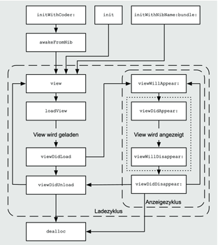

Zum Online-Shop
Zum Online-Shop
3.2 Views und Viewcontroller
Das Beispielprogramm Clock, das sich ebenfalls auf der DVD befindet, zeigt zwar mehrere Uhren an, deren Zeiger bleiben aber stehen. Das liegt daran, dass dieses Programm die Methode startAnimation nicht aufruft. Wenn Sie diesen Aufruf in die Methode awakeFromNib in der Klasse ClockView einfügen, bewegen sich die Zeiger. Allerdings startet dann das Laden des Views die Timer, und erst der Aufruf der Methode dealloc der Uhren stoppt sie. Die Uhren laufen also ständig. Bei so einer kleinen App, die nur eine Ansicht zeigt, ist das zwar nicht schlimm. In größeren Projekten ist es sicherlich sinnvoller, die Timer nur dann laufen zu lassen, wenn die App sie auch tatsächlich anzeigt. Die Klasse UIView bietet dafür aber leider keine entsprechenden Methoden an.
Diese Aufgabe kann der Viewcontroller übernehmen. In Cocoa Touch leiten sich die Viewcontroller von der Klasse UIViewController ab. Diese bietet vier Methoden an, die bei einer Änderung des Anzeigezustandes aufgerufen werden und die Sie in Ihren Unterklassen überschreiben können.
-(void)viewWillAppear:(BOOL)inAnimated;
-(void)viewDidAppear:(BOOL)inAnimated;
-(void)viewWillDisappear:(BOOL)inAnimated;
-(void)viewDidDisappear:(BOOL)inAnimated;
Listing 3.19 Benachrichtigungsfunktionen für die Anzeige des Views
Während Cocoa Touch die ersten beiden Methoden bei der Anzeige des Views aufruft, ruft es die letzten beiden beim Verschwinden des Views auf. Der Namensbestandteil Will bedeutet, dass die Methode vor dem Ereignis aufgerufen wird, während Did bedeutet, dass sie nach dem Ereignis aufgerufen wird. Der boolesche Parameter gibt dabei jeweils an, ob die Anzeige oder das Verschwinden animiert erfolgt. Wenn Sie diese Methoden überschreiben, müssen Sie auch immer die entsprechende Methode in der Oberklasse aufrufen.
Sie könnten jetzt also die Uhren in viewDidAppear: starten und in viewWillDisappear: stoppen. Sie müssen dazu nur noch Ihren Viewcontroller mit den Uhren bekannt machen.
3.2.1 Outlets
Sie können in NIB-Dateien nicht nur den View-Aufbau speichern, sondern auch Verbindungen zwischen den Objekten im NIB und dem Eigentümer der NIB-Datei. Der Eigentümer ist dabei das Objekt, das die Datei geöffnet hat. Das ist in der Regel der Viewcontroller. Es gibt vier Verbindungstypen:
- Actions sind Verbindungen zwischen Views, die Ereignisse versenden, und Methoden, die diese Ereignisse verarbeiten. Dieser Verbindungstyp ist Gegenstand des Abschnitts 3.2.3.
- Ein Outlet verbindet ein Objekt in der NIB-Datei mit einem Attribut oder einer Property eines anderen Objekts.
- Eine Outlet-Collection verbindet mehrere Objekte mit einem Array-Attribut oder einer Array-Property. Diesen Verbindungstyp gibt es erst seit iOS 4.0.
- Ein Segue (Übergang) verbindet in einem Storyboard unter iOS 5 Views, die Ereignisse versenden, mit einem Viewcontroller. Übergänge beschreibt Abschnitt 3.2.7.
Diese Verbindungen erzeugen Sie über den Interface Builder. Kopieren Sie dazu das Beispielprojekt Clock auf Ihre Festplatte, und öffnen Sie es mit Xcode 4. Wählen Sie danach die Datei ClockViewController.xib aus und darin den Hauptview, wie Sie es bereits in Abschnitt 3.1. gemacht haben. Wenn Sie jetzt mit der rechten Maustaste (oder mit der linken bei gedrückter -Taste) in einen der Clockviews klicken, können Sie eine Verbindung von dem View zu der Headerdatei des Controllers ziehen. Dazu müssen Sie im Abschnitt Editor der Xcode-Toolbar den Assistant Editor aktiviert haben (siehe Abbildung 3.13).

Abbildung 3.13 Ziehen einer Outlet-Verbindung
Nachdem Sie die Maustaste innerhalb der Klassendeklaration losgelassen haben, erscheint ein Popoverdialog (siehe Abbildung 3.14), über den Sie ein Outlet oder eine Outlet-Collection anlegen können. Geben Sie clockView in das Textfeld ein, und lassen Sie die übrigen Einstellungen des Dialogs unverändert.
Abbildung 3.14 Popoverdialog für das Outlet
Durch einen Klick auf den Button Connect erstellen Sie im Quelltext ein Attribut und eine Property, vor deren Klasse die Markierung IBOutlet steht. Diese Markierung ist ein leeres C-Makro, das keine Auswirkung auf den erzeugten Programmcode hat. Es dient lediglich dazu, dem Interface Builder anzuzeigen, dass er zu dieser Property Verbindungen herstellen kann.
@property (nonatomic, retain) IBOutlet ClockView *clockView;
Der Speicherverwaltungstyp der Property hängt davon ab, welches Speicherverwaltungsmodell Ihr Projekt verwendet. Bei manuellem Referenzenzählen hat die Property den Typ retain, und bei automatischem Referenzenzählen hat sie den Typ strong.
| Hilfe bei der Speicherverwaltung |
|
Xcode verändert nicht nur die Deklaration Ihrer Klasse, sondern auch deren Implementierung. Wenn Sie eine Outlet-Property anlegen, setzt Xcode in der Methode viewDidUnload die Property auf nil. Wenn Sie in Ihrem Projekt manuelles Referenzenzählen verwenden, sendet Xcode in dealloc außerdem noch ein release an das Attribut. |
Anstelle von Outlet-Propertys können Sie auch Outlet-Attribute erzeugen. Dazu müssen Sie das Gummiband in den Attributblock, also zwischen die geschweiften Klammern, der Klassendeklaration ziehen. Allerdings halten sich Outlet-Attribute nicht an die Speicherverwaltungsregeln. Ein Outlet-Attribut bekommt ein retain gesendet, wenn es keinen Setter dafür gibt. Verwenden Sie also auch hier lieber Propertys als Attribute.
Nach dem Laden der NIB-Datei verbindet Cocoa Touch diese Property mit dem View. Sie können sich die gesetzten und möglichen Verbindungen eines Objekts im Interface Builder über den Verbindungsinspektor ansehen (siehe Abbildung 3.15).
Abbildung 3.15 Der Verbindungsinspektor zeigt Verbindungen an.
Indem Sie die entsprechenden Anweisungen in die Methoden viewDidAppear: und viewWillDisappear: einfügen, können Sie über den Viewcontroller jetzt eine Uhr starten. Die kompletten Methoden müssen Sie in die Implementierungsdatei ClockViewController.m schreiben:
- (void)viewDidAppear:(BOOL)inAnimated {
[super viewDidAppear:inAnimated];
[self.clockView startAnimation];
}
- (void)viewWillDisappear:(BOOL)inAnimated {
[self.clockView stopAnimation];
[super viewWillDisappear:inAnimated];
}
Listing 3.20 Starten und Stoppen der Animation über den Viewcontroller
Außerdem sollten Sie die Headerdatei der Klasse ClockView in diese Implementierungsdatei einbinden, da Sie ansonsten Warnungen bei der Übersetzung erhalten. Dazu fügen Sie noch die Zeile
#import "ClockView.h"
in die Implementierungsdatei ein. Setzen Sie sie unter die bereits enthaltene Importanweisung.
Wenn Sie jetzt Ihr Programm im Simulator ausführen, bewegen sich die Zeiger einer Uhr, während die anderen Uhren stillstehen. Falls Sie eine andere Uhr aktivieren möchten, können Sie einfach ein Gummiband von einem anderen Clockview auf das Outlet ziehen. Sie können jetzt für jede Uhr auch ein eigenes Outlet mit den entsprechenden Start- und Stoppanweisungen anlegen, um die Uhren analog zu starten und zu stoppen. Das ist aber sehr unelegant und sieht nicht sehr schön aus, da Sie mehrmals die gleichen Anweisungen schreiben müssen. Für das mehrfache Ausführen der gleichen Anweisung gibt es doch schließlich Schleifen.
Seit iOS 4 können Sie Outlet-Collections verwenden, um mehrere Uhren zu verwalten. In früheren iOS-Versionen haben Sie diese Möglichkeit allerdings noch nicht. Hier können Sie aber Ihre Uhren über einen Container-View verwalten.
Legen Sie eine neue Kopie des Clock-Beispielprojekts an, öffnen Sie den View wie zu Beginn dieses Abschnitts, und ziehen Sie ein Band von einem Clockview in die Schnittstelle der Klasse ClockViewController. Lassen Sie wieder die Maustaste los, wenn sich der Mauszeiger zwischen der schließenden, geschweiften Klammer und dem Schlüsselwort @end befindet.
Im Popoverdialog wählen Sie unter Connection jetzt den Punkt Outlet Collection aus, und in das Textfeld schreiben Sie clockViews. Nach einem Klick auf den Connect-Button wird eine Property mit dem Typ NSArray angelegt und eine Markierung IBOutletCollection(ClockView) vor der Deklaration des Typs. Außerdem hat Xcode ein Attribut clockViews angelegt und auch die Implementierungsdatei verändert.
Sie können jetzt der Outlet-Collection beliebig viele Clockviews zuweisen, indem Sie Gummibänder von den Views zu dieser Property-Deklaration ziehen. Der Makroparameter ClockView schränkt im Interface Builder die möglichen Objekte für die Zuweisung auf die Klasse ClockView ein. Zum Starten und Stoppen der Uhren können Sie jetzt eine Schleife verwenden:
- (void)viewDidAppear:(BOOL)inAnimated {
[super viewDidAppear:inAnimated];
for(ClockView *theView in self.clockViews) {
[theView startAnimation];
}
}
- (void)viewWillDisappear:(BOOL)inAnimated {
for(ClockView *theView in self.clockViews) {
[theView stopAnimation];
}
[super viewWillDisappear:inAnimated];
}
Listing 3.21 Starten und Stoppen der Uhren über eine Outlet-Collection
| Achtung |
|
Outlet-Collections verwenden zwar Arrays. Sie können aber die Reihenfolge der Elemente in dem Array nicht durch den Interface Builder festlegen. |
Speicherverwaltung und Outlets
Für Objekte, die Cocoa Touch aus NIB-Dateien lädt und einem Outlet zuweist, gibt es eine besondere Speicherverwaltungsregel. Ein solches Objekt empfängt ein zusätzliches retain, wenn es keine Methode zum Setzen des Wertes gibt. Andernfalls bekommt das Objekt kein retain geschickt. Sie müssen also Outlet-Attribute freigeben, indem Sie ihnen ein release schicken. Das sollten Sie in den Methoden dealloc und viewDidUnload machen, wo Sie danach das Attribut auch noch auf nil setzen müssen.
Seit Xcode 4 gibt es diese Möglichkeit, die Verbindungen von den Views direkt in den Header des Controllers zu ziehen. In älteren Versionen war das nicht möglich, und der Controller wurde durch ein Symbol dargestellt. Dieses Symbol finden Sie auch immer noch in der aktuellen Version des Interface Builders. Es ist der File’s Owner, der gelbe Würfel, links neben ihrem View. Dieses Objekt ist nur ein Platzhalter für ein Objekt, das aber nicht in der NIB-Datei enthalten ist. Wenn der Viewcontroller die NIB-Datei über die Methode loadView lädt, ist der File’s Owner der Viewcontroller. Für die Datei MainWindow.nib, auf die wir später noch eingehen, ist es hingegen das Singleton UIApplication. Wenn Sie allerdings eine NIB-Datei manuell laden, können Sie jedes beliebige Objekt als Eigentümer verwenden.
Containerviews
Wenn Sie mit Ihrer App eine ältere iOS-Version als 4 unterstützen möchten oder die Reihenfolge der Views wichtig ist, können Sie statt der Outlet-Collection auch einen View als Container verwenden. Sie legen dazu alle Views, auf die Sie gesammelt zugreifen möchten, in einem gemeinsamen View an. Auf diesen View greifen Sie über ein Outlet zu. Häufig wird für diese Containerviews ein UIView mit transparenter Hintergrundfarbe verwendet. An die einzelnen Views gelangen Sie dann über die Property subviews des Containerviews. Allerdings kann jeder View nur in maximal einem Containerview liegen.
| Unterstützung älterer iOS-Versionen |
|
Programmierer neigen dazu, immer die aktuelle Version des Betriebssystems vorauszusetzen.
Bei den Endanwendern sieht das allerdings anders aus. Apple unterstützt iOS 4 und
erst recht iOS 5 nicht oder nur eingeschränkt auf älteren iPhones und iPod touches.
Besitzer eines iPhone 2G müssen mit iOS 3 vorliebnehmen, und iOS 5 läuft nicht mehr
auf einem 3G. Mit zunehmender Vielfalt von Cocoa-Touch-Geräten ist damit zu rechnen,
dass es immer eine nicht zu kleine Benutzergruppe gibt, die nicht die aktuelle Version
von iOS verwenden kann.
|
In unserem Beispielprojekt existiert bereits ein View, den Sie als Containerview verwenden können. Es ist der Hauptview, in den Sie alle Clockviews gelegt haben. Für diesen Containerview brauchen Sie kein Outlet, da er bereits durch eine Property mit dem Viewcontroller verbunden ist. Sie können also die Outlet-Collection im letzten Listing durch die Property subviews der view-Property des Viewcontrollers ersetzen. Sie müssen dazu nur die Zeilen mit den Schleifenköpfen durch
for(ClockView *theView in self.view.subviews) {
ersetzen. Das funktioniert aber nur solange, wie Sie keine Views einer anderen Klasse in den Hauptview legen.
3.2.2 View-Hierarchien
Die Reihenfolge der Subviews im darüber liegenden View ist entscheidend für die Anzeige. Sie können sich die Reihenfolge in der Baumdarstellung des Views ansehen, zu der Sie gelangen, indem Sie auf das Symbol am unteren Fensterrand von Xcode 4 klicken (siehe den Mauszeiger in Abbildung 3.16).
Abbildung 3.16 Umstellung auf Baumansicht (Mauszeiger)
In der Baumdarstellung können Sie sehen, wie die Views verschachtelt sind und in welcher Reihenfolge sie innerhalb einer Ebene liegen. Diese Anordnung wirkt sich auf die Darstellung und die Verarbeitung der Eingaben (oder auch Touches) aus. Je näher ein View zum Hauptview liegt, umso früher stellt Cocoa Touch ihn dar. Wenn also zwei Views einen gleichen Bereich auf dem Display verwenden, dann verdeckt der später dargestellte View den früher dargestellten.
In Abbildung 3.17 ist die Baumdarstellung eines Views zu sehen. Dabei haben die Views (1 bis 8) jeweils die gleichen Ziffern wie die Views in der Voransicht. Der rote View 2 ist am nächsten zum Hauptview, weswegen ihn alle anderen Views verdecken. Der gelbe View 6 liegt hinter dem grünen 3 und verdeckt somit diesen. Der schwarze View 7 liegt im gelben View, wodurch er diesen verdeckt.
Abbildung 3.17 Baumdarstellung eines Views
3.2.3 Actions
Bislang haben die verwendeten Views nur etwas auf dem Bildschirm dargestellt. Viele Views können aber auch Eingaben verarbeiten. Im Gegensatz zu den meisten Desktop-Computern ist bei iOS-Geräten das Ausgabegerät ja auch gleichzeitig das Eingabegerät. Diese Views sind in der Regel von der Klasse UIControl abgeleitet und werden im Folgenden auch kurz als Controls bezeichnet. Typische Controls sind beispielsweise Buttons, Schieberegler und Textfelder.
Neben den Outlets können Sie auch Action-Verbindungen herstellen. Mit diesen Verbindungen verknüpfen Sie die von den Controls gesendeten Ereignisse mit einer Methode eines Controllers. Wenn Sie eine Action-Verbindung zu einem Control erzeugen, bekommt das Control ein Zielobjekt und eine Action-Methode übergeben. Dieses Vorgehen bezeichnet man auch als Target-Action-Mechanismus.
Action-Methoden müssen eine von drei vorgegebenen Signaturen haben und zumindest in der Deklaration für den Rückgabetyp das Makro IBAction verwenden. Dieses Makro wird während der Übersetzung durch den C-Typen void ersetzt. Es zeigt dem Interface Builder an, dass es sich bei einer Methode um eine Action-Methode handelt.
Die drei möglichen Signaturen für Action-Methoden sind:
-(IBAction)methodenName;
-(IBAction)methodenName:(id)inSender;
-(IBAction)methodenName:(id)inSender
forEvent:(UIEvent *)inEvent;
Listing 3.22 Mögliche Signaturen für Action-Methoden
Den Methodennamen können Sie dabei natürlich frei wählen. Der erste Parameter in der zweiten und dritten Variante enthält das Control, das das Ereignis abgeschickt hat. Als Typ wurde hier id verwendet, der auf jede Klasse passt. Sie dürfen aber auch einen konkreten Typ, beispielsweise UIButton *, verwenden. Dann können Sie in der Methode auch die Punktnotation für dieses Control verwenden.
Über den Event-Parameter der dritten Variante können Sie zusätzliche Informationen über das auslösende Ereignis erhalten. Über den Event erhalten Sie beispielsweise die genauen Fingerpositionen zum Auslösezeitpunkt. Die liefert Ihnen der Event in Objekten der Klasse UITouch. Eine Möglichkeit, die Fingerposition zu bestimmen, stellt Listing 3.23 dar.
- (IBAction)touchWithSender:(id)inSender
forEvent:(UIEvent *)inEvent {
UITouch *theTouch = [inEvent.allTouches anyObject];
CGPoint thePoint = [theTouch locationInView:inSender];
// Touchposition in thePoint auswerten
}
Listing 3.23 Ermittlung der Touchposition
Sie sollen jetzt einen Schalter, das ist ein View der Klasse UISwitch, dafür verwenden, den Animationsstatus einer Uhr aus dem Clock-Projekt zu steuern. Legen Sie dafür wieder eine Kopie dieses Projekts an, löschen Sie die drei kleinen Uhren aus dem View, und legen Sie ein Outlet für die verbliebene Uhr an. Als Nächstes fügen Sie einen UISwitch hinzu. Das ist ein Schiebeschalter mit zwei Zuständen für »an« und »aus«. Nach dem Einfügen ziehen Sie von dem Schiebeschalter ein Band in den Header des Viewcontrollers. In dem Popoverdialog haben Sie nun eine zusätzliche Auswahlmöglichkeit Action. Füllen Sie diesen Dialog wie in Abbildung 3.18 gezeigt aus.
Abbildung 3.18 Anlegen einer Action-Methode
Das Control sendet das Ereignis Value Changed immer dann, wenn sich der Wert ändert, den das Control verwaltet. Bei einem UISwitch ist das ein boolescher Wert, der die Schalterstellung repräsentiert.
Sie können nun die Action-Methode wie folgt implementieren:
- (IBAction)switchAnimation:(UISwitch *)inSender {
if(inSender.on) {
[clockView startAnimation];
}
else {
[clockView stopAnimation];
}
}
Listing 3.24 Action-Methode zum Starten und Stoppen der Animation
Außerdem sollte die Methode viewWillDisappear: die Uhr stoppen. Wenn Sie nun das Projekt ausführen, können Sie die Uhr über den Schalter starten und stoppen. Allerdings wird nach dem Starten die Uhr stehen, obwohl der Schalter eingeschaltet ist. Sie können das umgehen, indem Sie entweder die Uhr in viewDidAppear: starten oder im Attributinspektor des Schalters dessen Anfangszustand ändern.
Eine andere Möglichkeit besteht darin, auch für den Schalter ein Outlet anzulegen. Der Wert des Schalters wird in der Methode viewDidAppear: ausgelesen, und in Abhängigkeit davon wird die Uhr gestartet. Der Vorteil dieser Lösung ist, dass Sie den Anfangszustand der Uhr über den Interface Builder, also ohne Veränderung des Programmcodes, einstellen können. Das ist bei diesem kleinen Projekt vielleicht kein so großer Vorteil, kann aber bei sehr umfangreichen und komplexen Applikationen sehr angenehm sein. Wenn Sie das entsprechende Outlet animationSwitch nennen, sieht der Code dafür so aus:
-(void)viewDidAppear:(BOOL)inAnimated {
[super viewDidAppear:inAnimated];
if(animationSwitch.on) {
[clockView startAnimation];
}
}
Listing 3.25 Starten der Animation in Abhängigkeit von einem Schalter
3.2.4 Ereignisse
Sie haben im Beispielprogramm das Ereignis Value Changed von einem Schalter an eine Methode Ihres Viewcontrollers gesendet. Ein Control kann noch eine Reihe weiterer Ereignisse senden. Diese Ereignisse lassen sich in drei Kategorien unterteilen:
- Ereignisse für Wertänderungen
- Ereignisse für Gesten
- Ereignisse für Textänderungen
Wir untersuchen die einzelnen Ereignisse im Folgenden genauer.
Ereignisse für Wertänderungen
Dieses Ereignis haben Sie bereits kennengelernt, und es hat den Typ UIControlEventValueChanged. Es wird von Controls gesendet, die einen Wert manipulieren. Dazu gehören die Klassen UIPageControl, UISegmentedControl, UISlider und UISwitch.
Ereignisse für Gesten
Ein wichtiger Erfolgsfaktor des iPhones ist dessen Gestensteuerung. Es gibt in iOS zwei Klassen von Gesten. Der Nutzer kann über Berührungsgesten Eingaben auf dem Bildschirm machen. Das können einfache Fingerdrücke oder komplexere Mehrfingerbewegungen auf dem Touchscreen sein. Dieser Abschnitt beschäftigt sich ausschließlich mit dieser Gestenklasse. Eine weitere grundsätzliche Möglichkeit, Eingaben vorzunehmen, sind Bewegungs- und Schüttelgesten, die das fünfte Kapitel behandelt.
Berührungsgesten lösen eine Reihe von unterschiedlichen Ereignissen aus. Eine Berührungsgeste kann sich über mehrere Views erstrecken. Die Ereignisse werden aber immer an das Control gesendet, das das erste Ereignis einer Geste empfangen hat.
- UIControlEventTouchDown leitet alle Gesten ein und wird bei der ersten Berührung des Controls gesendet.
- UIControlEventTouchUpInside beendet eine Geste, wenn sich die Finger zuletzt innerhalb des auslösenden Controls befunden haben. Sie verwenden diesen Ereignistyp in der Regel als Auslöser bei Buttons.
- UIControlEventTouchUpOutside beendet eine Geste, wenn sich die Finger zuletzt außerhalb des auslösenden Controls befunden haben.
- UIControlEventTouchCancel bricht eine Geste ab. Dieser Ereignistyp wird beispielsweise an Controls innerhalb eines Scrollviews gesendet, wenn Cocoa Touch erkennt, dass Sie mit der Geste scrollen möchten und die Ereignisse nicht das Control betreffen. Cocoa Touch sendet dieses Ereignis auch, wenn es die Gestenverarbeitung wegen einer Speicherwarnung abbrechen muss.
- UIControlEventTouchDragInside zeigt eine Fingerbewegung innerhalb eines Controls an.
- UIControlEventTouchDragOutside zeigt eine Fingerbewegung außerhalb eines Controls an.
- UIControlEventTouchDragExit wird gesendet, wenn Sie die Finger aus dem Control heraus bewegen. Dieser Ereignistyp markiert den Übergang von UIControlEventTouchDragInside zu UIControlEventTouchDragOutside.
- UIControlEventTouchDragEnter wird beim Verschieben der Finger in das Control hinein gesendet. Dieser Ereignistyp markiert den Übergang von UIControlEventTouchDragOutside zu UIControlEventTouchDragInside.
UIControlEventTouchDownRepeat wird bei mehreren, schnell aufeinanderfolgenden Berührungen für die Berührungen nach UIControlEventTouchDown gesendet. Sie können mit diesem Ereignistyp beispielsweise Doppel- oder Dreifachtaps auswerten. Die Anzahl der Taps können Sie über die Property tapCount aus den UITouch-Objekten des Ereignisses erfragen. Die Touch-Objekte erhalten Sie über die Property allTouches der Klasse UIEvent (siehe Listing 3.23).
Sie können sich sehr komplexe Gesten ausdenken und mit diesen Ereignistypen umsetzen. Allerdings scheinen die von außerhalb des Controls gesendeten Ereignisse nicht so zuverlässig zu funktionieren. Es kann beispielsweise vorkommen, dass Sie bei einer Fingerverschiebung aus dem Control heraus noch weitere UIControlEventTouchDragInside-Ereignisse empfangen. Die Umschaltung auf UIControlEventTouchDragOutside erfolgt teilweise erst, wenn sich der Finger schon lange außerhalb des Controls befindet. Wenn Sie also diese Ereignistypen verwenden möchten, sollten Sie ausgiebige Tests auf Geräten mit einplanen.
Viele Gesten lassen sich aber relativ einfach umsetzen. Sie können beispielsweise Mehrfachtaps mit folgender Action-Methode auswerten, die Sie mit dem Ereignistyp UIControlEventTouchDownRepeat verbinden:
- (IBAction)handleMultiTap:(id)inSender
forEvent:(UIEvent *)inEvent {
UITouch *theTouch = inEvent.allTouches.anyObject;
if(theTouch.tabCount == 2) {
// Doppel-Tap erkannt
}
}
Listing 3.26 Erkennung einer Double-Tap-Geste
In den Body der If-Abfrage können Sie den Code einsetzen, den Sie bei einem Doppel-Tap ausführen wollen. Die Zahl in der Bedingung gibt die notwendige Anzahl der Taps an. Wenn Sie sie entsprechend anpassen, können Sie mit dem Code auch Dreifach- oder Vierfach-Taps erkennen.
Jede Geste sendet mindestens zwei Ereignisse: UIControlEventTouchDown und einen Touch-Up-Event. Sie können bei Gesten für Fingerbewegungen UIControlEventTouchDown zur Initialisierung der Geste und UIControlEventTouchUpInside oder -Outside zum Beenden verwenden. Gegebenenfalls sollten Sie auch das Ereignis UIControlEventTouchCancel auswerten. Über dieses Ereignis können Sie Änderungen bei einem Gestenabbruch rückgängig machen.
Die Gestenverarbeitung für Ereignisse lässt sich aber nur sehr schlecht wiederverwenden. Das ist gerade bei komplexen Gesten ungünstig. Für die Gestenverarbeitung gibt es noch andere Möglichkeiten, die dieses Kapitel auch noch vorstellt (siehe Abschnitt 3.2.6).
Ereignisse für Textänderungen
Diese Ereignisse unterstützt derzeit nur die Klasse UITextField. Sie können zwar auch hier Action-Methoden mit UIEvent-Parametern verwenden. Dafür bekommen Sie hier aber immer nil übergeben.
- UIControlEventEditingDidBegin markiert den Beginn
der Eingabe in ein Textfeld. - UIControlEventEditingDidChange zeigt die Änderungen
des Textes im Textfeld an. - UIControlEventEditingDidEnd markiert das Ende der Eingabe in ein Textfeld.
- UIControlEventEditingDidEndOnExit markiert ebenfalls das Ende der Eingabe in ein Textfeld. Das Textfeld sendet dieses Ereignis anscheinend nur, wenn der Nutzer das Textfeld durch Drücken des Return-Knopfes über die Systemfunktion beendet. Leider geht die Apple-Dokumentation auf dieses Ereignis nicht genauer ein.
Ein View, dessen Klasse nicht von UIControl abgeleitet ist, kann keine Ereignisse verschicken. Wenn Sie aber ein Ereignis senden möchten, beispielsweise um die Berührung eines Bildes zu verarbeiten, können Sie das Bild einfach in einen View mit der Klasse UIControl legen. Sie legen ein solches Control wie einen Clockview an. Ziehen Sie ein Viewobjekt an die gewünschte Stelle, und ändern Sie dessen Klasse im Identitätsinspektor auf UIControl. Im Verbindungsinspektor dieses Views finden Sie dann alle beschriebenen Ereignisse.
Sie können aber auch einen Button verwenden, der auch die Anzeige von Bildern unterstützt.
3.2.5 Controlzustände und Buttons
Neben den Ereignissen unterstützen Controls auch drei boolesche Systemzustände. Diese Zustände werden durch eine Bitmaske in der Property state des Controls abgebildet.
- UIControlStateHighlighted ist aktiv, solange das Control gedrückt wird. Dieser Zustand kann auch über die Property highlighted abgefragt oder gesetzt werden.
- UIControlStateDisabled setzt das Control inaktiv. Es verarbeitet keine Eingaben und versendet auch keine Ereignisse. Diesen Zustand können Sie auch über die Property enabled abfragen oder setzen. Der Wert der Property ist dabei aber genau umgekehrt zu dem Wert in der Bitmaske.
- UIControlStateSelected zeigt an, dass das Control ausgewählt ist. Diesen Zustand können Sie auch über die Property selected abfragen oder setzen.
Ein Control kann mehrere Zustände gleichzeitig aktiviert haben. Wenn kein Zustand in der Bitmaske gesetzt ist, hat das Control den Zustand UIControlStateNormal. Am ausgiebigsten machen Buttons von den Zuständen Gebrauch.
Buttons sind relativ komplexe Controls, die mehrere Darstellungselemente unterstützen. Die Darstellungselemente können Sie in Abhängigkeit zu den Zuständen setzen. Sie können für jede Zustandskombination eine eigene Darstellung festlegen. Außerdem können Sie über die Property adjustsImageWhenHighlighted zusätzlich festlegen, dass der Button beim Drücken noch einen Glüheffekt anzeigt. Abbildung 3.19 stellt rechts jeweils einen Button im Zustand highlighted ohne und mit Glüheffekt dar.
Abbildung 3.19 Die verschiedenen Darstellungstypen für Buttons
Ein Button kann einen von sechs vordefinierten Darstellungstypen haben, wobei fünf Typen ein festes Aussehen haben (siehe Abbildung 3.19, links) und Sie beim sechsten Typ, UIButtonTypeCustom, das Aussehen selbst bestimmen können.
Ein Custom-Button unterstützt drei Darstellungselemente: ein Vorder- und ein Hintergrundbild und einen Titel (siehe Abbildung 3.20). Für den Titel können Sie außerdem noch die Text- und die Schattenfarbe zustandsabhängig setzen. Sie können also über diese fünf Eigenschaften das wesentliche Aussehen des Buttons festlegen, wobei Sie das Bild im Vordergrund und den Titel über Insets beliebig positionieren können.

Abbildung 3.20 Die Darstellungselemente eines Buttons
Wenn Sie für eine Zustandskombination eine Darstellungseigenschaft nicht definieren, wird stattdessen die des Normalzustands verwendet. Im Interface Builder können Sie alle Eigenschaften für die einfachen Zustände, aber nicht für Kombinationen aus mehreren Zuständen festlegen. Sie können also beispielsweise das Hintergrundbild für den Zustand Selected festlegen aber nicht für Selected + Highlighted. Das geht nur über Programmcode.
Durch die Möglichkeit, für die verschiedenen Buttonzustände unterschiedliche Darstellungen festzulegen, können Sie Ihren Apps relativ einfach optisch ansprechende Buttons hinzufügen und damit auch fehlende Buttontypen (beispielsweise Checkboxen) basteln. Die Uhr können Sie auch über einen einrastenden Button anstatt einem Schalter steuern. Das Einrasten wird durch Invertierung des Zustandes Selected erreicht. Die Action-Methode switchAnimation: müssen Sie wie folgt ändern:
- (IBAction)switchAnimation:(UIButton *)inSender {
inSender.selected = !inSender.selected;
if(inSender.selected) {
[clockView startAnimation];
}
else {
[clockView stopAnimation];
}
}
Listing 3.27 Action-Methode für einen einrastenden Button
Natürlich müssen Sie auch die Deklaration der Methode in der Headerdatei entsprechend ändern. Legen Sie im Interface Builder einen Button an, und stellen Sie über dessen Attributinspektor für die Zustände Default, Highlighted und Selected die Titel ein, klick beziehungsweise aus ein.
Abbildung 3.21 Der Attributinspektor eines Buttons
Verbinden Sie den Button mit der Action-Methode, indem Sie ein Band vom Button zum File’s Owner ziehen. Wenn Sie das Band dort loslassen, erscheint ein Dialog, in dem Sie die Action-Methode auswählen können. Im Verbindungsinspektor des Buttons können Sie sehen, dass der Interface Builder automatisch die Action-Methode mit dem Ereignis Touch Up Inside verbunden hat. Der Button sendet dieses Ereignis, wenn der Finger den Button losgelassen hat.
Nach dem Start des Programms ist die Uhr ausgeschaltet und der Button zeigt die Beschriftung ein. Wenn Sie den Button drücken, wechselt die Beschriftung auf klick und nach dem Loslassen auf aus. In diesem Zustand verbleibt der Button, und die Uhr läuft.
Durch erneutes Drücken des Buttons wechselt die Beschriftung wieder auf ein. Der Button hat doch den Zustand Highlighted. Warum erscheint hier nicht auch die Beschriftung klick? Das liegt daran, dass die Zustände Highlighted und Selected gesetzt sind. Für diese Zustandskombination haben Sie jedoch keinen Titel festgelegt, sodass der Button den Titel des Zustands Default verwendet.
Den Titel für diese Zustandskombination können Sie nicht im Interface Builder festlegen, sondern müssen das im Programmcode machen. Dafür legen Sie ein Outlet auf den Button an. Die Klasse UIViewController besitzt eine weitere Methode viewDidLoad, die aufgerufen wird, wenn der View geladen wurde.
Da der Button für den Zustand Selected + Highlighted den gleichen Titel wie für den Zustand Selected verwenden soll, kopiert die Methode den Titel. Dadurch können Sie den Titel allein über den Interface Builder pflegen. Durch diese Änderung zeigt der Button in der oben beschriebenen Situation jetzt auch den Titel klick anstatt ein an.
- (void)viewDidLoad {
[super viewDidLoad];
NSString *theTitle =
[switchButton titleForState:UIControlStateHighlighted];
[switchButton setTitle:theTitle
forState:UIControlStateSelected |
UIControlStateHighlighted];
}
Listing 3.28 Initialisierung eines Buttons nach dem Laden des Views
3.2.6 Direkte Gestenverarbeitung
Sie können den Target-Action-Mechanismus für die Gestenverarbeitung einsetzen. Dieses Vorgehen ist aber recht aufwendig, wenn Sie eine Geste wiederverwenden möchten. Cocoa Touch bietet noch andere Möglichkeiten, um Gesten zu verarbeiten.
Damit ein View die Touch-Ereignisse empfängt, müssen Sie dessen Property userInteractionEnabled setzen. Cocoa Touch durchsucht in der View-Hierarchie nur diese Views und sendet die Ereignisse an den tiefsten View, unter dem der Berührungspunkt des Fingers liegt. Mit der tiefste View ist gemeint, dass es in diesem View keinen weiteren Subview an der Fingerposition mit gesetzter Property userInteractionEnabled gibt.
| Der View muss auch wollen |
|
Sie können über userInteractionEnabled die Touchverarbeitung komplett ausschalten. Wenn Sie diesen Propertywert also auf NO setzen, reagieren weder der View noch seine Subviews mehr auf Berührungen. Dabei ist es egal, ob Sie ein Control verwenden oder die Touches direkt oder über eine andere Methodik auswerten. Bei userInteractionEnabled = NO ignoriert der View Ihre Berührungen – mögen Sie ihn noch so zärtlich streicheln. |
Die Klasse UIView stellt zwei Methoden bereit, um den Subview zu bestimmen, der die Gesten verarbeitet. Die Methode hitTest:withEvent: bestimmt zu einem Punkt den Subview, der die Gestenverarbeitung übernehmen soll. Sie verwendet dazu die Methode pointInside:withEvent:.
Sie entscheidet, ob der angegebene Punkt in dem View liegt oder nicht. Während der Eventparameter bei beiden Methoden nil sein darf, müssen Sie den Punkt relativ zu dem Koordinatensystem des Views angeben. Wenn Sie diese Methode aus dem Programmcode aufrufen, müssen Sie also in der Regel den Punkt erst umrechnen.
Die Klasse UIView stellt dafür die Methoden convertPoint:fromView: und convertPoint:toView: bereit. Die erste Methode rechnet den Punkt aus dem Koordinatensystem des zweiten Parameters in das Koordinatensystem des Empfängers um. Bei der zweiten Methode sind die Koordinatensysteme des zweiten Parameters und des Empfängers bei der Berechnung vertauscht.
| ...und raus bist du! |
|
Wenn Sie die View-Bestimmung für die Gestenverarbeitung anpassen möchten, sollten Sie in Ihren Views die Methode pointInside:withEvent: überschreiben. Ein Überschreiben der Methode hitTest:withEvent: ist in der Regel nicht notwendig. Sofern Sie den Propertywert clipsToBounds eines Views auf NO setzen, kann jeder Subview des Views über dessen Grenzen hinaus zeichnen. Allerdings empfängt der Subview auch nur da Touches, wo er innerhalb seiner Superviews liegt. |
Gestenverarbeitung über Responder
Die Klasse UIResponder ist die direkte Oberklasse von UIView und UIViewController. Sie stellt mehrere Methoden zur Auswertung von Gesten bereit. Die Methoden für die Berührungsgesten haben jeweils zwei Parameter und liefern void zurück. Der erste Parameter ist eine Menge von UITouch-Objekten, die eine Fingerberührung auf dem Bildschirm repräsentieren. Der zweite Parameter ist ein UIEvent-Objekt.
Der Methodenaufruf von touchesBegan:withEvent: leitet eine Gestensequenz ein. Die folgenden Fingerbewegungen erhält der Responder über die Methode touchesMoved:withEvent:. Abgeschlossen wird die Geste über einen Aufruf von entweder touchesEnded:withEvent: oder touchesCancelled:withEvent:. Dabei kennzeichnet ein Aufruf der Methode touchesCancelled:withEvent:, dass das System eine Geste abbrechen möchte (siehe dazu die Beschreibung zu UIControlEventTouchCancel in Abschnitt 3.2.4).
Diese Methoden sind die Grundlagen der Gestenverarbeitung. Allerdings führt die Verwendung dieser Methoden in der Regel zu einer relativ festen Koppelung von View und Controller. Meistens muss der View das Ergebnis einer Geste an den Controller weiterreichen.
Gestenverarbeitung über Controls
Eine andere Möglichkeit, einen Controller lose an einen View zu koppeln, ist die Verwendung des Target-Action-Mechanismus. Dafür können Sie eigene Unterklassen von UIControl erstellen. Die Klasse UIControl stellt ebenfalls vier Methoden zur Gestenverarbeitung bereit. Diese sind den Methoden der Klasse UIResponder sehr ähnlich. Die Methoden beginTrackingWithTouch:withEvent:, continueTrackingWithTouch:withEvent: und endTrackingWithTouch:withEvent: erhalten jeweils zwei Parameter, wovon der erste ein Touchobjekt und der zweite der Event ist. Im Gegensatz zu den Respondermethoden erhalten Sie hier also nicht alle Berührungen des Bildschirms als direkte Parameter. Falls Sie eine Mehrfingergeste implementieren möchten, können Sie jedoch alle Berührungen über die Methode allTouches des Events abfragen. Außerdem gibt es noch die Methode cancelTrackingWithEvent:, die analog zu touchesCancelled:withEvent: beim Abbruch einer Geste aufgerufen wird.
Mit der Gestenverarbeitung soll aus der Uhr ein Wecker entstehen. Bei einem analogen Wecker gibt es neben den Zeigern für die Zeitanzeige einen weiteren Zeiger für die Alarmzeit. In der Wecker-App soll der Nutzer diesen Zeiger durch Berührung und Bewegung mit dem Finger einstellen können. Das Control muss also eine Drehbewegung mit einem Finger auf dem Bildschirm erkennen. Diese Bewegung ähnelt dem Wählen auf einem Telefon mit Wählscheibe. Das Control soll auch die Darstellung des Alarmzeigers übernehmen.
Das Control erhält für die Darstellung der Alarmzeit die Property time. Die Alarmzeit kann über die Methode angle in einen Winkel umgerechnet und über die Methode setAngle: als Winkelwert gesetzt werden. Die Methoden midPoint und pointWithRadius:angle: aus der Klasse ClockView werden in die Kategorie UIView(AlarmClock) ausgelagert, damit sowohl die View- als auch die Control-Klasse sie verwenden können. Die Methode angleWithPoint: berechnet über die C-Funktion atan2 zu einem Punkt im Control den Winkel der Linie, die vom Mittelpunkt zu diesem Punkt führt:
-(CGFloat)angleWithPoint:(CGPoint)inPoint {
CGPoint theCenter = [self midPoint];
CGFloat theX = inPoint.x – theCenter.x;
CGFloat theY = inPoint.y – theCenter.y;
CGFloat theAngle = atan2f(theX, -theY);
return theAngle < 0 ? theAngle + 2.0 * M_PI : theAngle;
}
Listing 3.29 Berechnung des Winkels zu einem Punkt
Der Winkel, den die Funktion atan2 berechnet, liegt zwischen – und . Negative Werte müssen Sie also auf entsprechende positive Werte umrechnen.
Der Zeiger soll sich nur verstellen lassen, wenn die Fingerberührung in der Nähe des Zeigers ist. Dazu überschreiben Sie die Methode pointInside:withEvent:
- (BOOL)pointInside:(CGPoint)inPoint
withEvent:(UIEvent *)inEvent {
CGFloat theAngle = [self angleWithPoint:inPoint];
CGFloat theDelta = fabs(theAngle – self.angle);
return theDelta < 2 * M_PI / 180.0;
}
Listing 3.30 Prüfung, ob ein Punkt in der Nähe des Alarmzeigers liegt
Die Variable theDelta enthält den Winkelabstand des Fingers vom Zeiger. Wenn dieser Windel kleiner als 2° ist, soll das Control den Touch verarbeiten.
Zu Beginn der Gestenverarbeitung speichert das Control den alten Winkel in der Property savedAngle. Ansonsten enthält die Begin-, die Continue- und die End-Tracking-Methode den gleichen Code:
CGPoint thePoint = [inTouch locationInView:self];
self.angle = [self angleWithPoint:thePoint];
[self setNeedsDisplay];
[self sendActionsForControlEvents: UIControlEventValueChanged];
Listing 3.31 Aktualisierung der Daten in den Tracking-Methoden
Die Methoden berechnen jeweils den neuen Winkel, speichern ihn in angle und zeichnen den Zeiger neu (Zeilen 1 bis 3). Anschließend lösen sie das Ereignis UIControlEventValueChanged aus, das die Action-Methoden aller Target-Objekte aufruft.
In der XIB-Datei können Sie jetzt das Control in den Clock-View legen, wenn Sie dem Control eine transparente Hintergrundfarbe geben. Sie müssen die Property userInteractionEnabled des Views auf YES setzen, damit die Gesten auch an das Control gesendet werden. Im Beispielprojekt auf der beigelegten DVD ist ein Label mit einem Outlet timeLabel angelegt, das die aktuelle Weckzeit als Text anzeigt.
Für die Aktualisierung wird der Ereignistyp Value Changed im Interface Builder mit der Methode updateTimeLabel verbunden. Sobald Sie den Alarmzeiger bewegen, sendet das Control dieses Ereignis. Die Aktualisierung erfolgt durch folgende Anweisungen:
NSInteger theTime = round(clockControl.time / 60.0);
NSInteger theMinutes = theTime % 60;
NSInteger theHours = theTime / 60;
timeLabel.text = [NSString stringWithFormat:@"%d:%02d", theHours, theMinutes];
Listing 3.32 Erzeugung einer Zeichenkette aus einer Zeit
Dem Wecker fehlt jetzt nur noch die Weckfunktion, also das Klingeln. Das behandelt Abschnitt 3.3.
Gestenverarbeitung über Gesturerecognizer
Mit der iOS-Version 3.2 [16](Diese Version war auf das iPad beschränkt. Für alle anderen Gerätetypen gibt es die Gesturerecognizer erst ab iOS 4.0.) beziehungsweise 4.0 hat Apple eine weitere Möglichkeit der Gestenverarbeitung eingeführt. Die Klasse UIGestureRecognizer ermöglicht eine Implementierung von Gestensteuerungen, die von den Views getrennt ist. Damit können Sie jede beliebige Gestenverarbeitung zu jedem View hinzufügen. Die Darstellung und die Eingabeverarbeitung eines Views werden also durch Gesturerecognizers vollkommen unabhängig voneinander oder auch orthogonal.
Die Klasse UIView bietet zwei Methoden und eine Property zum Verwalten von Gesturerecognizern an. Mit addGestureRecognizer: fügen Sie einem View einen neuen Gesturerecognizer hinzu, den Sie mit removeGestureRecognizer: wieder entfernen können. Mit der Property gestureRecognizers können Sie alle Gesturerecognizers des Views abfragen oder auf einmal setzen. Mit Xcode 4.2 können Sie die Gesture-Recognizer auch direkt über den Interface Builder zu Ihren Views hinzufügen.
Abbildung 3.22 Die Gesturerecognizer in Xcode 4.2
Das UIKit bietet schon eine Reihe fertiger Gesturerecognizer. Die Klassen sind in der gleichen Reihenfolge wie die Icons in Abbildung 3.22 aufgeführt.
- UITapGestureRecognizer erkennt einzelne oder mehrere Berührungen des haltenden Views. Sie können sowohl die notwendige Tap-Zahl als auch die Anzahl der beteiligten Finger zur Auslösung vorgeben.
- UIPinchGestureRecognizer erkennt die Bewegung von zwei Fingern aufeinander zu oder voneinander weg. Diese Geste wird meistens zum Heraus- beziehungsweise Hereinzoomen verwendet.
- UIRotationGestureRecognizer erkennt die Bewegung von zwei sich umeinander drehenden Fingern, wie sie meist für die Rotation von Bildern eingesetzt wird.
- UISwipeGestureRecognizer erkennt Wischbewegungen. Sie können die Anzahl der beteiligten Finger angeben, aber damit nur die Richtung und keine Distanzen auswerten.
- UIPanGestureRecognizer erkennt Verschiebe-Bewegungen in einem View. Sie können damit beispielsweise das Verschieben eines Views innerhalb eines anderen durchführen (Dragging). Auch bei diesem Gesturerecognizer können Sie die Anzahl der beteiligten Finger vorgeben.
- UILongPressGestureRecognizer erkennt längere Berührungen des zugrunde liegenden Views. Diese Gestenauswertung wird häufig eingesetzt, wenn ein View unterschiedliche Gestenarten unterstützen soll. Beispielsweise können Sie eine Karte scrollen und durch längeres Drücken einen Pin setzen. Auch bei diesem Gesturerecognizer können Sie die Anzahl der beteiligten Finger einschränken. Außerdem können Sie eine minimale Dauer für die Berührungslänge wählen.
Sie können auch eigene Unterklassen der Klasse UIGestureRecognizer schreiben und so eine eigene Gestenverarbeitung implementieren. Dafür werden die gleichen Methoden verwendet, die auch die Klasse UIResponder bereitstellt. Zusätzlich gibt es eine Methode reset. Sie können diese Methode überschreiben, um nach dem Abschluss einer Geste Ihren Gesturerecognizer für die nächste Geste zurückzusetzen.
Gesturerecognizer unterstützen wie Controls den Target-Action-Mechanismus – allerdings ohne Ereignistypen. Sie können über die Methode addTarget: action: eine neue Aktion hinzufügen, die Sie mit removeTarget:action: auch wieder entfernen können.
Das Beispielprojekt verwendet einen UILongPressGestureRecognizer, um die Alarmzeit zusätzlich zur Zeigerdrehung einstellen zu können. Wenn Sie länger als vier Zehntelsekunden das Ziffernblatt mit einem Finger berühren, wird der Alarmzeiger eingeschaltet und an der Position des Fingers angezeigt.
In der Methode viewDidLoad erstellen Sie einen neuen Gesturerecognizer und fügen ihn dem Control hinzu:
UILongPressGestureRecognizer *theRecognizer = [[UILongPressGestureRecognizer alloc] initWithTarget:self action:@selector(updateAlarmHand:)];
[self.clockControl addGestureRecognizer:theRecognizer];
[theRecognizer release];
Listing 3.33 Erzeugung eines Gesturerecognizers
Die Action-Methode eines Gesturerecognizers hat entweder keinen oder genau einen Parameter. In diesem Parameter bekommen Sie den Gesturerecognizer übergeben, und er sollte dessen Typ haben. Die Action-Methode für den Wecker muss die Position des Fingers auslesen. Dazu bietet die Klasse UIGestureRecognizer die Methode locationInView:, mit der Sie die Fingerposition relativ zu dem Koordinatensystem eines Views berechnen können.
Die Action-Methode updateClockHand: können Sie jetzt folgendermaßen implementieren:
-(void)updateAlarmHand:(UIGestureRecognizer *)inRecognizer {
CGPoint thePoint =
[inRecognizer locationInView:clockControl];
CGFloat theAngle =
[self.clockControl angleWithPoint:thePoint];
self.clockControl.angle = theAngle;
[self.clockControl setNeedsDisplay];
self.alarmSwitch.on = YES;
[self updateAlarm];
}
Listing 3.34 Action-Methode zur Aktualisierung des Alarmzeigers
Die Qual der Wahl
Sie haben drei Möglichkeiten zur Gestenverarbeitung kennengelernt. Welche ist denn nun die beste? Das hängt natürlich von dem Anwendungsfall ab. Tabelle 3.1 listet die verschiedenen Möglichkeiten für die Gestenverarbeitung auf.
| Gestenverarbeitung | Vor- und Nachteile |
| Überschreiben der Respondermethoden |
Vorteile
1. Gestenverarbeitung auch im Viewcontroller und nicht nur im View möglich. 2. Auswertung mehrerer unterschiedlicher Gesten innerhalb eines Views |
| Nachteile
1. Gefahr der Verletzung des MVC-Musters: Abhängigkeit des Views vom Controller |
|
| Unterklasse von UIControl | Vorteile
1. Nutzung des Target-Action-Mechanismus und dadurch keine Abhängigkeit des Views vom Viewcontroller 2. Nutzung der Action-Connections im Interface Builder 3. Hohe Wiederverwendbarkeit möglich |
| Nachteile
1. Keine eigenen Eventtypen |
|
| Unterklasse von UIGestureRecognizer | Vorteile
1. Gestenverarbeitung komplett von der Darstellung getrennt 2. Viele fertige Recognizer vorhanden 3. Höchster Wiederverwendungsgrad, da die Gestenerkennung komplett von der Darstellung getrennt ist |
| Nachteile
1. Erst ab iOS 3.2 |
Der Hauptnachteil bei der Verwendung der Respondermethoden, die enge Koppelung des Views an den Viewcontroller, kann natürlich auch bei undurchdachter Implementierung der anderen Verfahren auftreten. Bei der Verwendung des Respondermechanismus tappen jedoch viele Programmierer in diese Falle. Sie können eine starke Koppelung jedoch über Delegation vermeiden.
3.2.7 Übergänge
Mit iOS 5 und den Storyboards hat Apple auch Segues (Übergänge) eingeführt. Diese Objekte beschreiben einen Übergang von einem Viewcontroller zu einem anderen. Übergänge haben somit als Verbindungstyp im Interface Builder einen sehr eingeschränkten Anwendungsbereich. Andererseits können Sie darüber schon im Interface Builder eine Verknüpfung zwischen den UI-Elementen und den Views festlegen. Deswegen nennt Apple diese neuen Beschreibungsdateien für die Views auch Storyboards.
Um die Funktionsweise der Übergänge zu veranschaulichen, erstellen Sie dafür ein kleines Projekt. Sie finden es unter dem Namen Segue auch auf der beiligenden DVD. Legen Sie dazu in Xcode ein neues iPad-Projekt des Typs Single View Application an, und geben Sie an, dass dieses Projekt ein Storyboard verwenden soll. Öffnen Sie das Storyboard, und legen Sie einen neuen Button in den dort angezeigten View. Danach ziehen Sie einen neuen Viewcontroller (siehe Abbildung 3.23) auf die Zeichenfläche des Storyboards.
Abbildung 3.23 Die Viewcontroller im Interface Builder
Als Nächstes legen Sie einen Übergang an, indem Sie bei gedrückter rechter Maustaste ein Gummiband vom Button zu dem neuen Viewcontroller ziehen. Nachdem Sie in dem schwarzen Dialog den Eintrag performSegueWithIdentifier:sender: ausgewählt haben, zeigt der Interface Builder zwischen den Viewcontrollern einen grauen Pfeil mit einem Symbol in der Mitte an. Im Attributinspektor dieses Segues können Sie jetzt festlegen, wie der Übergang erfolgen soll. Wählen Sie unter Style die Option Modal und unter Presentation den Punkt Form Sheet aus (siehe Abbildung 3.24).
Abbildung 3.24 Ein Übergang zwischen zwei Viewcontrollern
Starten Sie das Projekt im Simulator, und klicken Sie den Button. Der Simulator graut die weiße Fläche aus und schiebt von unten ein weißes Rechteck auf den Bildschirm. Dieses Rechteck ist der neue Viewcontroller, den Sie im Storyboard angelegt haben.
Mit dieser Konfiguration zeigt die App ihn als modalen Dialog an. Wählen Sie nun im Attributinspektor des Segues den Stil Popover. Wenn Sie nun Ihr Programm starten, stürzt es mit der Meldung
*** Terminating app due to uncaught exception 'NSGenericException', reason: '-
[UIPopoverController dealloc] reached while popover is still visible.'
ab. Das liegt daran, dass Ihnen der Segue einen weiteren Controller für Ihr Popover angelegt hat, Ihr Programm ihn aber nicht hält. Er liegt nur im Autoreleasepool, und deshalb räumt ihn Cocoa Touch am Ende der Runloop gnadenlos weg. Um dieses Problem zu umgehen, legen Sie eine private Property popoverController mit der Klasse UIPopoverController an. In der Methode prepareForSegue:sender: können Sie dann den neu erzeugten Popovercontroller in der Property ablegen. Diese Methode ruft das Segueobjekt auf, bevor es den neuen Viewcontroller anzeigt:
#import "SegueViewController.h"
@interface SegueViewController()
@property (nonatomic, strong)
UIPopoverController *popoverController;
@end
@implementation SegueViewController
@synthesize popoverController;
- (void)prepareForSegue:(UIStoryboardSegue *)inSegue sender:(id)inSender {
if([inSegue respondsToSelector:
@selector(popoverController)]) {
self.popoverController =
[(id)inSegue popoverController];
}
}
@end
Listing 3.35 Zuweisung des Popover-Controllers
In Listing 3.35 befindet sich die Zuweisung in einem If-Block. Dadurch führt die Methode die Zuweisung nur aus, wenn das Segueobjekt eine Methode popoverController besitzt. Mit dieser Abfrage können Sie jederzeit und ohne Änderungen am Programmcode wieder auf einen modalen Übergang zurückschalten. Die Methode prepareForSegue:sender: ruft Cocoa Touch für jeden Übergang des Viewcontrollers auf. Wenn Sie also mehrere Segueobjekte zu einem Viewcontroller anlegen, müssen Sie diese auch unterscheiden können. Das können Sie über die String-Property identifier machen, die Sie im Attributinspektor des Segues setzen können. Sie können Übergänge auch im Code über die Methode performSegueWithIdentifier:sender: auslösen. Im Beispielprogramm Segue geschieht das in der Methode performSegue:
- (IBAction)performSegue:(id)inSender {
[self performSegueWithIdentifier:@"dialog"
sender:inSender];
}
Listing 3.36 Auslösung eines Übergangs
Auf Popover- und die anderen Viewcontroller-Arten gehen die beiden nächsten Kapitel noch genauer ein.
3.2.8 Der Lebenszyklus eines Viewcontrollers
Der Viewcontroller verwaltet den View. Er lädt also die NIB-Datei und erzeugt den View. Wie aber wird ein Viewcontroller erzeugt?
In Ihrem Projekt befindet sich eine weitere XIB-Datei, MainWindow.xib. Wenn Sie diese Datei öffnen, finden Sie darin drei Objekte.
Abbildung 3.25 Die Objekte in »MainWindow.xib«
Der Viewcontroller und das Application-Delegate werden über eine NIB-Datei erzeugt. Die Datei MainWindow.nib wird beim Programmstart automatisch mit dem Singleton UIApplication als File’s Owner geladen.
Sie können übrigens Objekte von beliebigen Klassen in einer NIB-Datei ablegen. Wenn Sie diese Objekte nach der Erzeugung initialisieren möchten, sollte deren Klasse eine Initialisierungsmethode init oder initWithCoder: besitzen, oder Sie schreiben den Initialisierungscode in die Methode awakeFromNib. Zu beliebigen Objekten in NIB-Dateien folgen später noch Beispiele.
| Tipp |
|
Wenn Sie einen Viewcontroller über eine NIB-Datei erzeugen, dann sollten Sie unbedingt auf zwei Dinge achten. Erstens müssen Sie im Identitätsinspektor die Klasse des Viewcontrollers setzen. Andernfalls wird für den Viewcontroller ein Objekt mit der Klasse UIViewController erzeugt. Zweitens sollten Sie im Attributinspektor die richtige XIB-Datei mit dem passenden View auswählen. |
Sie haben bereits einige Methoden kennengelernt, die Cocoa Touch zu bestimmten Zeitpunkten im Leben eines Viewcontrollers aufruft. Wenn Sie beispielsweise die Methode viewDidAppear: überschreiben, können Sie eigenen Programmcode ausführen, unmittelbar nachdem der View des Viewcontrollers zur Anzeige gebracht wurde. Cocoa Touch benachrichtigt Sie also über ein bestimmtes Ereignis, das Ihren Viewcontroller betrifft. In Abbildung 3.26 ist der komplette Lebenszyklus eines Viewcontrollers anhand seiner Initialisierungs- und Benachrichtigungsmethoden sowie der Property view dargestellt. Bis auf die Property view dürfen Sie aber keine dieser Methoden direkt aufrufen. Sie dürfen sie nur überschreiben.
Abbildung 3.26 Der Lebenszyklus eines Viewcontrollers
Die Methoden initWithCoder: und awakeFromNib kennen Sie ja bereits von den View-Klassen. Diese Methoden kommen zum Zuge, wenn Sie den Viewcontroller in einer NIB-Datei oder einem Storyboard erzeugen.
Sie können einen Viewcontroller auch aus Ihrem Programmcode erzeugen. Dazu dienen die Methoden init und initWithNibName:bundle:. Wenn Sie init verwenden, müssen Sie entweder die Methode loadView implementieren, oder die NIB-Datei des Viewcontrollers muss bis auf die Dateiendung genauso wie die Klasse Ihres Viewcontrollers heißen. Wenn sie allerdings einen anderslautenden Namen haben soll, sollten Sie stattdessen die Initialisierungsmethode initWithNibName:bundle: verwenden, wobei Sie für den Bundle-Parameter nil verwenden können.
Wenn Sie Ihr Viewcontroller-Objekt erzeugen, laden Sie gewöhnlich noch nicht dessen View. Das Überschreiben der Methode awakeFromNib ist also in vielen Fällen sinnlos, da aufgrund des fehlenden Views noch nicht alle Outlets initialisiert sind. Es sind nur die Outlets gesetzt, die in die NIB-Datei verweisen, die den Viewcontroller erzeugt. Beispielsweise erzeugt die Datei MainWindow.xib den Viewcontroller AlarmClockViewController. Wenn Sie von dessen Objekt innerhalb von MainWindow.xib ein Outlet zu einem anderen Objekt ziehen, ist dieses Outlet bereits in der Methode awakeFromNib gesetzt.
Der Viewcontroller lädt den View beim ersten Zugriff auf die Property view. Das geschieht vor der ersten Anzeige des Views. Sie können aber auch das Laden erzwingen, indem Sie die Property auslesen. Sie können dafür Ihrem Viewcontroller beispielsweise die folgende Methode hinzufügen:
-(void)forceLoadView {
self.view;
}
Listing 3.37 Methode zum Laden des Views eines Viewcontrollers
Der Zugriff auf die Property in Zeile 2 erzwingt das Laden des Views. Den Ladezustand des Views erfragen Sie über die Methode isViewLoaded.
Die Methode loadView lädt den View aus der NIB-Datei. Sie können diese überschreiben, um den View durch Code zu erzeugen. Dazu weisen Sie der Property view einfach Ihren erstellten View zu. In diesem Fall sollten Sie aber nicht die Methode in der Oberklasse aufrufen. Cocoa Touch ruft nach dem Laden des Views die Methode viewDidLoad auf, die Sie ja auch bereits kennengelernt haben.
| Tipp |
|
Wenn Sie Ihren Viewcontroller oder dessen View nach dem Laden initialisieren möchten, sollten Sie dazu die Methode viewDidLoad überschreiben. Wegen der fehlenden Outlet-Verbindungen ist die Methode awakeFromNib ist in den meisten Fällen nicht dafür geeignet. Die Methode loadView ist zum Laden des Views gedacht und sollte auch nur dafür überschrieben werden. |
Sie können jetzt Ihren Viewcontroller beliebig oft anzeigen und wieder verschwinden lassen. In diesen Anzeigezyklen ruft Cocoa Touch viewWillAppear:, viewDidAppear:, viewWillDisappear: und viewDidDisappear:, die Sie bereits kennengelernt haben, auf. Das nächste Kapitel stellt mehrere Möglichkeiten vor, Viewcontroller anzuzeigen und wieder verschwinden zu lassen.
Ein Viewcontroller muss seinen View nicht unbedingt im Hauptspeicher halten, falls er gerade nicht angezeigt wird. Cocoa Touch gibt den View bei knappem Speicher frei und ruft danach die Methode viewDidUnload auf. Diese Methode bildet somit das Gegenstück zu viewDidLoad. Sie sollten sie überschreiben, um Outlets auf nil zu setzen. Der Viewcontroller bleibt aber auch nach einem Aufruf von viewDidUnload im Hauptspeicher der App. Wenn auf dessen Property view zugegriffen wird, beginnt der Ladezyklus von vorne.
| Tipp |
|
Die Methoden viewDidLoad und viewDidUnload sollten Sie immer so implementieren, dass sie mehrmals aufgerufen werden können.
Sie sollten also alle Ressourcen und besonders alle Outlets freigeben, die Sie über
loadView oder in viewDidLoad angelegt haben. Achten Sie aber darauf, dass Sie in viewDidUnload keine Ressourcen oder Outlets freigeben, die bereits vor loadView erzeugt wurden. Diese Objekte können ja durch loadView oder viewDidLoad nicht wiederhergestellt werden.
|
Ihr Kommentar
Wie hat Ihnen das <openbook> gefallen? Wir freuen uns immer über Ihre freundlichen und kritischen Rückmeldungen.


{kind=link}
{kind=link}
{kind=link}
{kind=link}
{kind=link}
{kind=link}
{kind=link}
{kind=link}
{kind=link}
{kind=link}
{kind=link}
{kind=link}